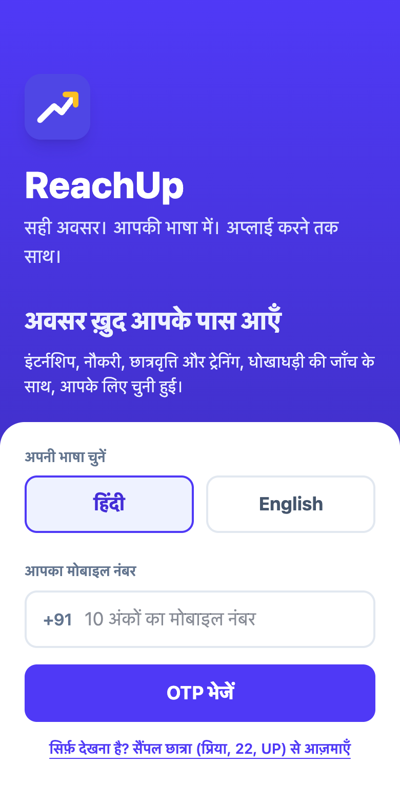
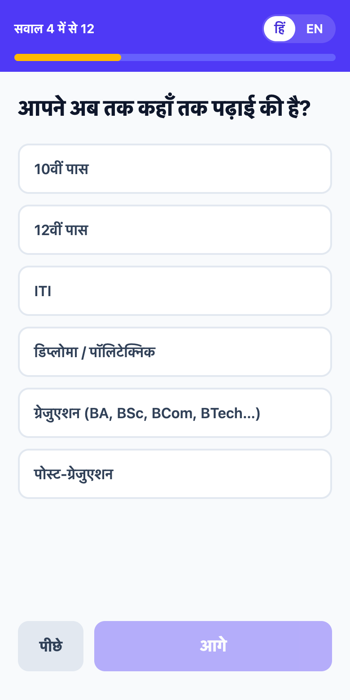
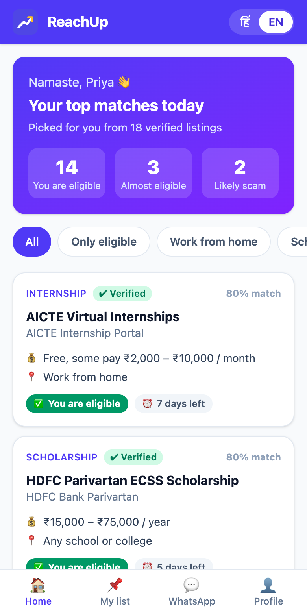
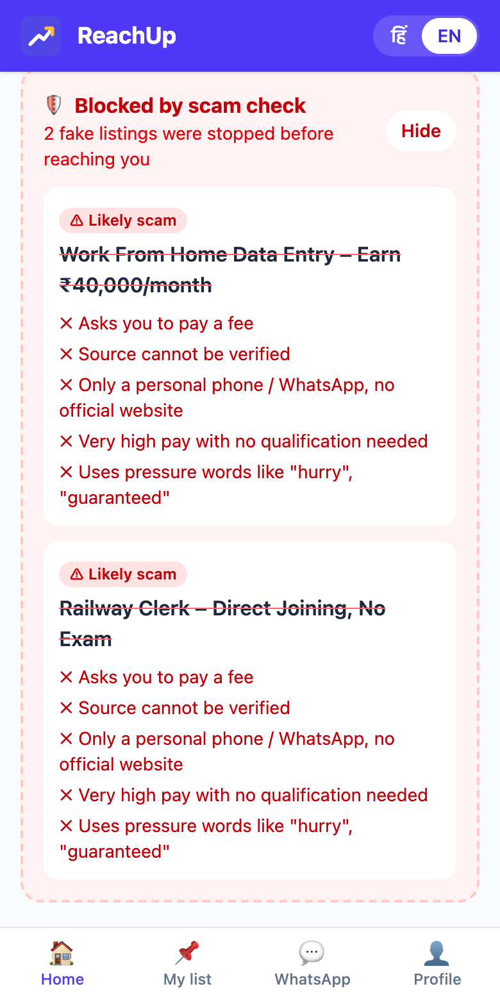
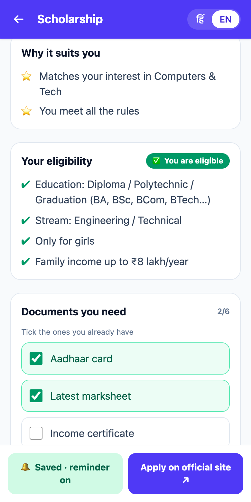
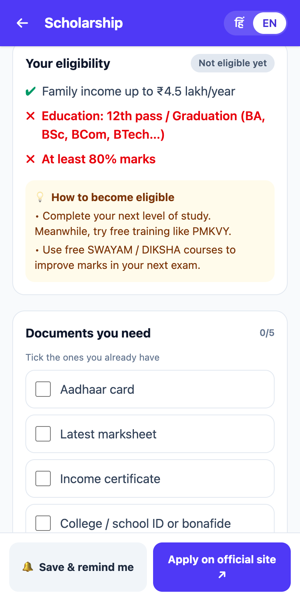
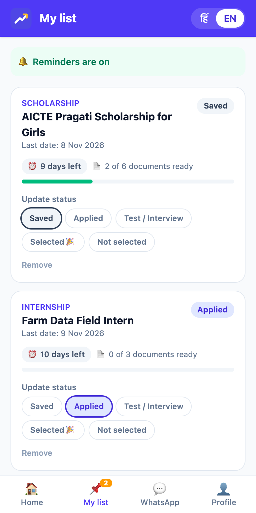
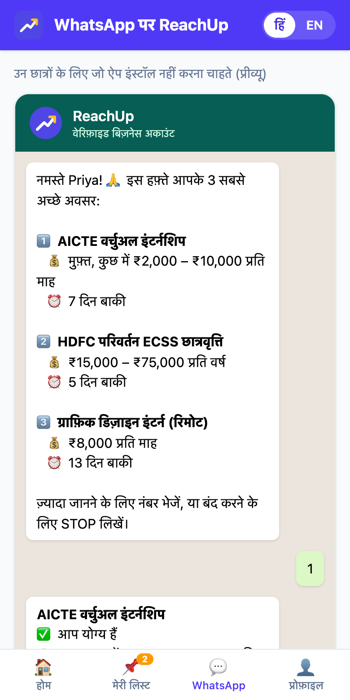

| Source code | github.com/Amitrawal1/ReachUp |
| Prototype | Working mobile-first web app (PWA) in Hindi and English, installable on Android and usable offline |
Many talented students and young professionals live in small towns and villages. They have the skills and the interest, but they often do not know about the internships, jobs, scholarships, fellowships, training programs and competitions that are open to them. Students in big cities hear about these through seniors, college placement cells, LinkedIn and professional networks. Rural students usually do not have this network.
The main problems are:
As a result, a lot of real talent is never discovered, and organisations miss out on capable people from outside big cities.
ReachUp is a mobile-first, multilingual platform that brings the right opportunities to rural and semi-urban youth and helps them all the way from finding an opportunity to getting selected.
It works on a simple idea: instead of asking students to search everywhere, we bring verified and relevant opportunities to them, in their own language, on the apps they already use, and we guide them until they apply.
| Step | How ReachUp helps |
|---|---|
| Discover | One place for internships, jobs, scholarships, fellowships, training programs and competitions, collected from many sources, verified and matched to the student's profile. |
| Prepare | Simple guides, free course suggestions, a resume builder, mock interview practice and mentor support for each opportunity. |
| Apply | Eligibility check, document checklist, step-by-step application help and deadline reminders. |
| Grow | Tracking of all applications, feedback after results, and new suggestions based on what the student has done. |
For Level 2 we built the full Phase 1 of our plan as a working app, and added two items from Phase 2 (scam check and a WhatsApp channel preview). Everything below can be tried on the live link.

Sign up
Language first, mobile number + OTP

Simple profile
12 one-tap questions, voice input

Matched feed
"You are eligible" on every card

Scam check
Fake offers blocked, with reasons

Guided application
Why it suits you, eligibility, documents

Not eligible?
Exactly what is missing + how to fix it

Track & remind
Status tracker, deadline alerts

WhatsApp preview
Weekly matches without an app
| Feature | What it does in the prototype | Problem it solves |
|---|---|---|
| Sign up + language | Mobile number and OTP. Hindi or English is chosen first, and can be switched on every screen. | Language barrier |
| Q&A profile | 12 short questions, one per screen, mostly one tap (education, stream, marks, state, category, family income, interests). Name can be spoken. | Long forms, low digital confidence |
| Smart matching | Every opportunity gets a score from eligibility, interest match, benefit (stipend, travel, remote) and deadline urgency. Best matches first. | Scattered information |
| Eligibility check | Rules (age, education, stream, gender, category, income, marks, employment) are checked one by one. The student sees "You are eligible" or exactly what is missing, with a tip to fix it. | Low awareness of eligibility |
| Scam check | Each listing is checked for 5 warning signs: asks for a fee, unknown source, only a personal phone/WhatsApp, very high pay with no qualification, pressure words. Fake listings are blocked and the student sees why. | Fake listings and scams |
| Guided detail page | Simple explanation, "why it suits you", document checklist, numbered steps to apply, read aloud in Hindi/English, share on WhatsApp. | Hard application process |
| Deadline reminders | Saving an opportunity turns on a phone notification 3 days before the last date, plus a "Due soon" list. | Missed deadlines |
| Application tracker | Saved → Applied → Test/Interview → Selected / Not selected. If not selected, similar opportunities are suggested right away. | No guidance after applying |
| Low-data PWA | Light web app (about 110 KB download), can be installed on Android, opens offline after the first visit. | Weak internet, basic phones |
| WhatsApp preview | Shows how students without the app will get their weekly top matches and reply with a number for details. | Students who will not install apps |
The prototype runs fully in the browser: the student's profile and saved list stay on their own phone, which keeps data private and lets the app work offline. In the full product the same matching and scam-check logic will read from a live database filled by partner APIs, portal feeds and the organisation portal.
| Step | What happens | Prototype |
|---|---|---|
| 1. Sign up | Student registers with a mobile number through the app, website or WhatsApp. They can choose their language. | Built |
| 2. Simple profile | A short question-and-answer flow (text or voice) collects education, skills, interests, location and preferences. No long forms. | Built |
| 3. Matching | The system finds opportunities the student is eligible for and ranks them by relevance, deadline and benefit (stipend, remote, travel support). | Built |
| 4. Daily / weekly feed | Student gets a short list of top matches in their language on the app, WhatsApp or SMS. | App WhatsApp preview |
| 5. Guided application | For each opportunity, the student sees what it is, why it suits them, what is needed and how to apply, with a checklist and reminders. | Built |
| 6. Support | Student can ask questions to a chatbot, book time with a mentor, or visit a local champion for help. | Phase 2–3 |
| 7. Track and follow up | Student marks the status of each application and gets reminders for tests and interviews, and tips if not selected. | Built |
| Feature | What it does | Problem it solves | Status |
|---|---|---|---|
| Opportunity Aggregator | Collects opportunities from government portals, job and internship sites, scholarship portals, company career pages and partner organisations into one place. | Scattered information | Phase 2 |
| Verification and Scam Check | Each listing is checked for source, organisation details and warning signs (like asking for fees). Verified listings get a badge. | Fake listings and scams | Built |
| Smart Matching and Eligibility Check | Matches the student's profile with opportunity requirements and clearly says "You are eligible" or what is missing. | Low awareness of eligibility | Built |
| Local Language and Voice | Listings, guides and chatbot available in Indian languages. Students can speak instead of typing. | Language barrier | Hindi + English |
| Low-Data Access | Light app that works on slow internet, offline saving, WhatsApp bot, and SMS / missed-call alerts for basic phones. | Weak internet and basic phones | Lite PWA |
| Application Assistant | Resume builder from simple answers, cover letter help, document checklist, form-filling guidance and deadline reminders. | Hard application process, missed deadlines | Checklist + reminders |
| Mentor Connect | Volunteer mentors (alumni, working professionals) for short calls, resume review and mock interviews. | No network or guidance | Phase 3 |
| Skill Gap Suggestions | If a student is not yet eligible, the system suggests free courses (for example from government learning platforms) to close the gap. | Missing skills | Basic tips |
| Community Champions | Trained local volunteers at colleges, ITIs, polytechnics and common service centres help students who are new to digital tools. | Low digital confidence | Phase 3 |
| Organisation Portal | Companies, NGOs and institutions can post opportunities, search rural talent by skill and location, and mark roles as remote-friendly. | Organisations cannot reach rural talent | Phase 2 |
| Channel | Who it serves |
|---|---|
| Android app (lite) | Students with smartphones; works on low-end phones and slow data, with offline saving. |
| Website (PWA) | Students using cyber cafes, college labs or common service centres. |
| WhatsApp bot | Students who use WhatsApp daily but do not want to install a new app. |
| SMS and missed-call alerts | Students with basic phones or very poor internet. |
| Local champions | Students who need in-person help to get started. |
| Part | Prototype (built) | Full product (planned) |
|---|---|---|
| App | React + Vite + Tailwind CSS, Progressive Web App with offline support | Same PWA + Flutter or React Native lite Android app |
| Backend | None needed: logic runs in the browser | Node.js / Python FastAPI |
| Database and search | Opportunity list in the app; profile stored on the student's phone | PostgreSQL, Elasticsearch for fast opportunity search |
| Matching | Rule-based eligibility engine + relevance score | Recommendation model learning from applications and selections |
| Scam detection | Rule-based checker (5 warning signs) | ML model + user reporting + organisation verification |
| Language and voice | Hindi / English, browser speech-to-text and read aloud | More Indian languages via Bhashini / IndicTrans |
| Messaging | Browser notifications for deadlines; WhatsApp preview | WhatsApp Business API, SMS and IVR gateway, push notifications |
| Data collection | Curated list | Partner APIs, RSS feeds and web scrapers with regular updates |
| Deployment | Vercel (free hosting) | Cloud hosting with Docker |
| Type | Examples of sources |
|---|---|
| Government | National Career Service, PM Internship Scheme, AICTE internship portal, National Scholarship Portal, Skill India |
| Private platforms | Internship and job portals, competition and hackathon platforms, company career pages |
| Scholarships and fellowships | Scholarship portals, CSR foundations, university and NGO fellowship programs |
| Direct partners | Companies, startups, NGOs and colleges posting directly on the organisation portal |
| User | How ReachUp helps |
|---|---|
| Students in rural areas and small towns | Find verified opportunities in their language, know if they are eligible, and get help to apply. |
| Young job seekers and graduates | Discover jobs, apprenticeships and skill programs near them or remote. |
| Colleges, ITIs and polytechnics | Share opportunities with all students and track how many apply and get selected. |
| Companies and startups | Reach a large pool of motivated talent outside big cities, especially for remote roles. |
| NGOs, CSR programs and government schemes | Make sure their scholarships and programs actually reach the people they are meant for. |
| Mentors and alumni | Give back by guiding students from their home region in a few minutes a week. |
| Existing job and internship portals | ReachUp |
|---|---|
| Mostly English | Local languages with voice support |
| Student has to search on many sites | Opportunities collected in one place and sent to the student |
| Same list for everyone | Personalised matching with a clear eligibility check |
| Heavy websites and apps | Lite app, WhatsApp bot and SMS for low internet |
| No check on fake listings | Verified badge and scam warnings |
| Only shows the listing | Guides the student from discovery to application and after |
| Online only | Online plus local community champions |
| Phase | What we will build | Status |
|---|---|---|
| Phase 1 (prototype) | Student sign-up and simple profile, opportunity feed, matching and eligibility check, opportunity detail page with checklist, deadline reminders, Hindi and English. | Done ✓ |
| Phase 2 | WhatsApp bot, resume builder, verification and scam check, organisation portal, live data from government portals and partners. | Scam check + tracker done; rest next |
| Phase 3 | More Indian languages with voice, mentor connect, SMS / missed-call alerts, community champion dashboard, skill gap course suggestions. | Planned |
ReachUp stays free for students, always. Costs are covered by the organisations who benefit from reaching rural talent:
| Who pays | For what |
|---|---|
| Companies and startups | Featured listings and searching the talent pool by skill and location (basic posting stays free). |
| CSR foundations and NGOs | Outreach campaigns so their scholarships and programs reach the right students, with reports on reach and applications. |
| Colleges, ITIs and polytechnics | A placement dashboard to share opportunities with all their students and track outcomes. |
| Government schemes | Partnerships to increase applications from rural areas for internships, apprenticeships and scholarships. |
| Challenge | Our approach |
|---|---|
| Poor internet connectivity | Lite app, offline saving, WhatsApp and SMS options. |
| Low digital confidence | Voice input, simple screens, local community champions. |
| Keeping listings up to date | Automatic regular updates and removal of expired listings. |
| Trust and fake opportunities | Verification process, verified badges and user reporting. |
| Data privacy | Only necessary data collected, clear consent, and students control who sees their profile. In the prototype, the profile never leaves the student's phone. |
| Getting organisations to join | Free posting, access to a large talent pool, and partnerships with colleges and CSR programs. |
ReachUp connects rural and semi-urban talent to the opportunities they deserve. It brings verified, relevant opportunities to students in their own language and on the apps they already use, and it supports them at every step from discovery to selection. It also helps organisations find capable people beyond big cities.
Our working prototype already shows the core of this: a student answers a few simple questions in Hindi, sees which opportunities they are eligible for, is protected from fake offers, and is guided and reminded until they apply.